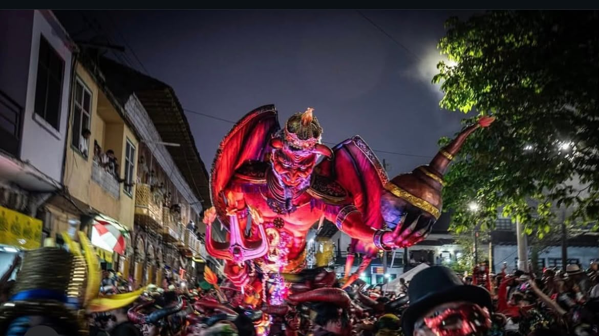
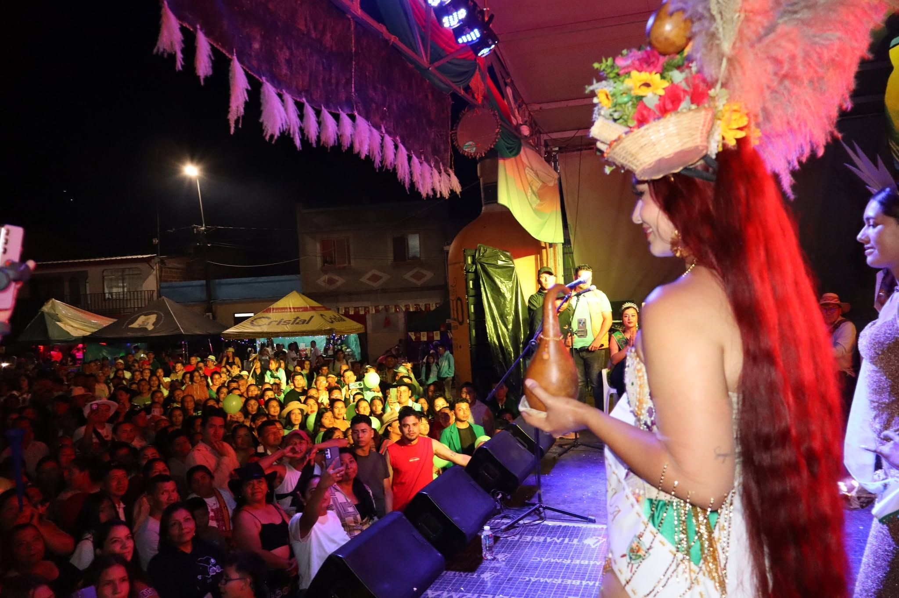
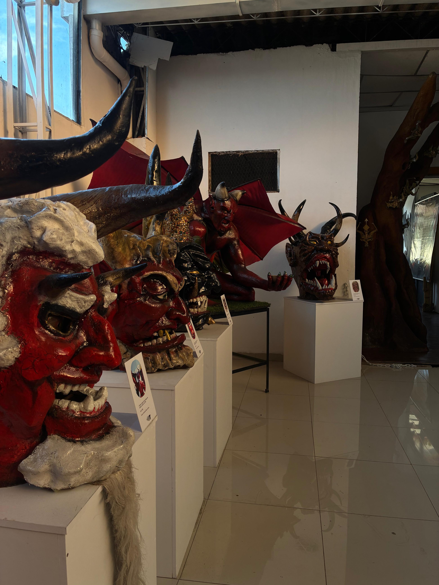

Tradiciones y Carnaval
Conoce las costumbres y celebraciones que dan identidad a Riosucio.

Carnaval de Riosucio
También conocido como el Carnaval del Diablo, es una de las fiestas más emblemáticas de Colombia.

Fiestas de los Resguardos Indígenas
Celebraciones que honran la riqueza ancestral de los cuatro resguardos indígenas de Riosucio.

Casa Museo del Carnaval
También conocida como el Museo del Diablo, resguarda la memoria material del Carnaval del Diablo.
Aquí irá el mapa interactivo